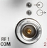
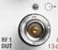

The SNAP N-type connectors on the front panel are used as inputs and outputs for RF signals.
The first frontend provides three connectors labeled RF 1 OUT, RF 1 COM and RF 2 COM.
The second frontend is optional. It provides three connectors labeled RF 3 OUT, RF 3 COM and RF 4 COM.
The impedance of all RF connectors is 50 Ω. The frequency ranges vary depending on the installed hardware options; input and output level ranges depend on the firmware applications (refer to the data sheet). The command reference sections state the maximum frequency ranges available with a fully equipped instrument (including optional parts).
The connectors are assigned to firmware application instances, see "Subinstruments".
For the signal paths behind the connectors, see "Signal Path Settings".
 |
- The upper LED is lit as long as the R&S CMW is ready to receive signals.
- The lower LED is lit as long as it transmits an RF signal.
 |
OUT connectors are unidirectional output connectors. Compared to COM connectors, OUT connectors can provide higher output powers. The LED is lit as long as the R&S CMW transmits an RF signal.

The maximum input levels at all bidirectional RF connectors according to the front panel labeling or the data sheet must not be exceeded.
In addition, the maximum input voltages of other input connectors at the front and rear panel must not be exceeded.
RF connectors can warm up very much if high RF power is fed in.